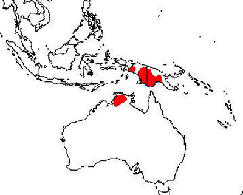
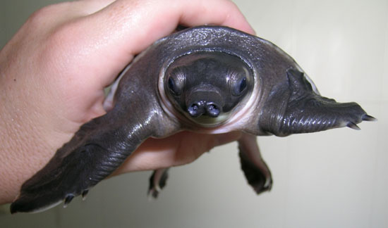
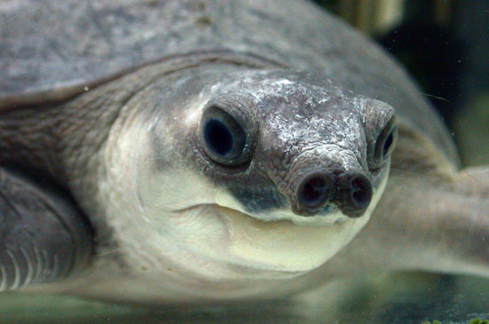
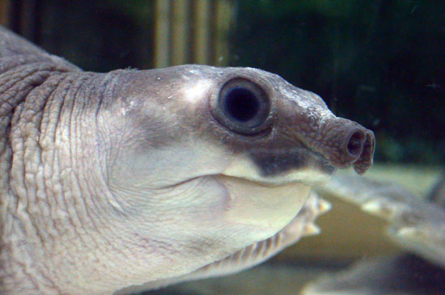
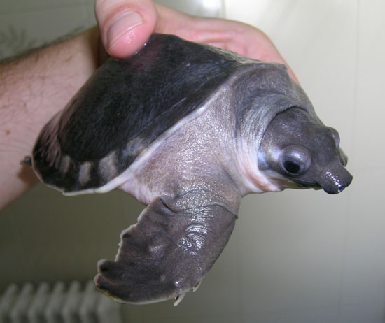
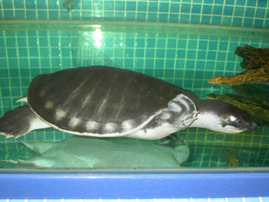
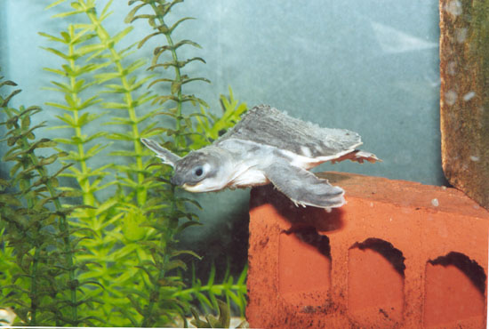
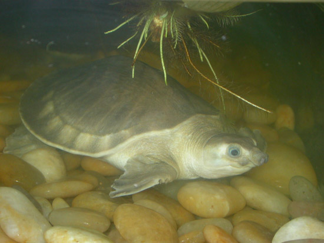

|
Carettochelys insculpta (Ramsay,
1887)
Jonathan Gonz�lez, 2006
Introducci�n
Carettochelys insculpta es la �nica
especie de su g�nero, que apareci� en el
Mioceno en Australia y Nueva Guinea. Pertenec�a anteriormente a la
subfamilia Carettochelynae, y compart�a familia con la
subfamilia Anosteirinae, la cual conten�a 19 componentes
procedentes del Oligoceno y Eoceno. Otras formas europeas del Eoceno
son los g�neros Allaeochelys y Acrochelys.
Esta peculiar tortuga habita en las cuencas hidrogr�ficas del
r�o Daly (Australia), sudeste de Irian Jaya y el r�o Fly (Nueva
Guinea). En esta isla tambi�n vive en lo r�os Strickland, Lorentz,
Stekwa y el lago Jamur.

Mapa de distribuci�n de Carettochelys
insculpta
Caracter�sticas
El caparaz�n llega alcanzar los 45 cm.
de longitud, aunque se han encontrado ejemplares gigantescos que
contaban con 50 cm. Las tallas m�ximas son de 22.5 Kg. y 56 cm. de
longitud (GEORGES & ROSE, 1993). Los ejemplares j�venes son de
color gris oscuro a negro, y el borde del caparaz�n muestra una
delgada l�nea amarillenta con un borde posterior aserrado, que va
desapareciendo a medida que el animal crece. EL caparaz�n de color
negro va empalideciendo con la edad hasta adoptar un color gris claro,
mientras que la quilla longitudinal, tan marcada en los ejemplares
j�venes, se va disimulando hasta
desaparecer por completo conforme el animal se desarrolla. Las placas est�n recubiertas por piel como
en la familia Trionychidae, en lugar de las placas c�rneas como
sucede en las tortugas marinas. El plastr�n es de
un color blanquecino y muchos ejemplares muestran tonos anaranjados y
rosados. Es bastante flexible ya que las placas del plastr�n est�n
unidas por tejidos cartilaginosos.

Carettochelys insculpta (Jos� Luis
Ramos).
La cabeza es de un color negruzco y
tiene unas manchas blancas y en ocasiones azuladas situadas justo
detr�s de los ojos que se conservan durante toda su vida,
mientras que el cuello de la tortuga es de un color blanquecino. Los
ojos son de un color rojizo. La nariz es muy curiosa, ya que consta de
un morro puntiagudo que finaliza en 2 aberturas, similares a las de
las tortugas de la familia Trionychidae. Debido a dicha
caracter�stica esta tortuga es com�nmente llamada: �Tortuga de nariz de
cerdo�.
Sus extremidades son muy similares a las
de las
tortugas marinas, ya que posee aletas en las extremidades anteriores y posteriores,
teniendo estas �ltimas forma de remo. La cola es muy curiosa, ya que
posee de 14 a 16 escamas de forma cil�ndrica que la rodean.


Ejemplar de 5 a�os de edad mantenido
en cautividad (Xavier Valls)
H�bitos
Esta tortuga vive en zonas acu�ticas de
gran profundidad, donde permanece en el fondo del lecho en busca de
alimento, mientras que solo sube a la superficie para respirar, con un
movimiento muy veloz. Es posible que gracias a los sacos anales y a la
red sangu�nea de la boca, pueda extraer oxigeno del agua (MULLER,
1993).
En cautividad, la temperatura del agua
de la cubeta debe oscilar desde los 27�-30� C. Es una tortuga
verdaderamente sensible a la suciedad en el agua, por lo que se hace
imprescindible la instalaci�n de un filtro, ya que la poca higiene del
agua provoca en numerosos casos infecciones cut�neas.
Se cree que puede aventurarse en aguas
salobres, y es conocida por ser una tortuga muy susceptible a ataques f�ngicos y
lesiones en el caparaz�n, por lo que adem�s de mantener el agua muy
limpia y es recomendable a�adirle un poco de sal. Tambi�n es
esencial controlar de manera peri�dica el PH del agua. �ste se debe
situar en 8.

Carettochelys insculpta (Jos� Luis
Ramos).
Suele poner entre 20 y 30 huevos, que
son enterrados en la arena, siguiendo un proceso de puesta muy similar
al de una tortuga marina. La �poca de puesta de esta tortuga se
realiza durante el mes de octubre en Australia, y durante los meses de
Enero y Febrero en Pap�a. La madurez sexual se alcanza aproximadamente
a los 15 a�os cuando el espaldar mide unos 30 cm. de longitud. Los
huevos eclosionan al cabo de 64-74 d�as, a unos 30� en estado salvaje
(HIGHFIELD, 1996). Los huevos incubados a 28-30�C, resultan ser
machos, mientras que las hembras eclosionan a 32�C. Ejemplares m�s o
menos igualdad de sexos eclosionan a una temperatura de 31.6� C. (GEORGES,
1987)

Carettochelys insculpta (Marcelo
L�pez).
Es una tortuga omn�vora y en cautividad
llega a aceptar tanto pescado, coraz�n e h�gado de ternera, pienso y
moluscos, como tomate, pera, pl�tano, lechuga, etc. En especial devora
con entusiasmo el tomate, las flores de hibisco, el pl�tano y la naranja. En
libertad se alimenta a base de hojas, frutos y flores de vegetaci�n
del tipo: Ficus racemosa, Pandanus aquaticus, Nypa
fructicous, Canarium indicum, Najas tenuifolias,
etc. (BARONE,
2004).
Es un animal algo agresivo, y no
conviene tener en una cubeta poco espaciosa varios ejemplares, en
especial si se trata de machos. Esto suele presentar problemas, ya que
necesitan estar aisladas y su tama�o es significativo, por lo que esta
tortuga es poco adecuada para su mantenimiento en acuario.

Carettochelys insculpta de 3 a�os de
edad mantenido en cautividad (Jos� Luis Ramos).
Conservaci�n
Es un animal relativamente abundante, ya
que en sus regiones de origen son adoradas, y se dice que matar a una
tortuga de esta especie produce impotencia. El �nico hecho que puede
provocar una regresi�n en las poblaciones salvajes es la captura para
fines comerciales, ya que es una especie com�n en el mercado de
mascotas. Ha sido incluida en el Ap�ndice II del Convenio de
Washington. Uno de los problemas naturales m�s amenazadores de esta
especie son los b�falos de agua, que aplastan las puestas cuando
rondan sus zonas de desove.

Carettochelys insculpta (Marcelo
L�pez).
Bibliograf�a
BARGERON, M.; 1997: Tortuga Gazette
33(3): 1-2.
BARONE, S.; 2004:
Carettochelys insculpta: una planeadora subacu�tica.
Reptilia(E): 46: 60-64.
BRONGERSMA, L.D.,
1958: The animal world of Netherlands New Guinea. J. B. Wolters,
Groningen; 70 pp.
DORRIAN, C. 1994:
Captive management of the Pig-nosed turtle, Carettochelys insculpta.
Herpetofauna (Sydney) 24(1): 15-18
DOODY, S., YOUNG, J.
& GEORGES, A.; 2002: Sex differences in Activity and movements in the
pig nosed turtle, Carettochelys insculpta in the Wet-Dry Tropics og
Australia, Copeia 2002 (1): 93-103.
GEORGES, A.; 1987:
The Pig-nosed turtle Warradjan. Australian Natural History. 22 (5):
203-234.
GEORGES, A. & ROSE,
M.; 1993: Conservation biology of the pig-nosed turtle. Chelonian
Conservation and Biology 1: 3-12.
GOGGER, H.G.; 1970:
First record of the pitted-shelled turtle, Carettochelys insculpta,
from Australia. Search 1: 41, 1pl.
PETERS, U.; 1970: Die
Papua-Schildkr�te-Carettochelys insculpta in Australien.-Datz,
23 (6):182-183.
ROOIJ de, N.; 1915:
Reptiles of the Indo-Australian Archipelago. I. Leiden.
SCHMIDT-WESTRUM, T.;
1963: Die Papuaschildkr�te aus Neuaguinea. natur und Museum, Frankfurt
am Main, 93: 119-127.
SCHODE, R.; MASON, I.
& WOLFE, T.O.; 1972: Further records of the pitted shelled turtle (Carettochelys
insculpta) from Australia. Trans. R. Soc. S. Aust., 96(2):
115-117.
WALTHER, W.G., 1922.
Die Neu-Guinea, 13 (Zool.): 607-704.
WERMUTH, H.; 1963:
Die Papua-Weichschildkr�te, Carettochelys insculpta.- Datz, 16
(11):341-343.
ZANGLER, R.; 1959:
Rudimentare Carapaxbeschuppung bei jungen Exemplaren von
Carettochelys und ihre morphogenetische Bedeutung. Festschr.
Steiner. Vierteljahrschr. Naturforsch. ges. Zurich 104, 138-147.
Links
www.carettochelys.com
http://aerg.canberra.edu.au/pub/aerg/herps/fncchely.htm
|